Last updated: June 16, 2005 (accessibility update)
This paper presents a basic overview of EMF and its code generator patterns. For a more complete description of all the features of EMF, refer to EMF: Eclipse Modeling Framework, Second Edition (Addison-Wesley Professional, 2008) or to the Javadoc for the framework classes themselves.
Introduction
Defining an EMF Model
Generating a Java Implementation
Using the Generated EMF Classes
Advanced Topics
EMF is a Java framework and code generation facility for building tools and other applications based on a structured model. For those of you that have bought into the idea of object-oriented modeling, EMF helps you rapidly turn your models into efficient, correct, and easily customizable Java code. For those of you that aren't necessarily sold on the value of formal models, EMF is intended to provide you with the same benefits and a very low cost of entry.
So, what do we mean when we say model? When talking about modeling, we generally think about things like Class Diagrams, Collaboration Diagrams, State Diagrams, and so on. UML (Unified Modeling Language) defines a (the) standard notation for these kinds of diagrams. Using a combination of UML diagrams, a complete model of an application can be specified. This model may be used purely for documentation or, given appropriate tools, it can be used as the input from which to generate part of or, in simple cases, all of an application.
Given that this kind of modeling typically requires expensive Object Oriented Analysis and Design (OOA/D) tools, you might be questioning our assertion, above, that EMF provides a low cost of entry. The reason we can say that is because an EMF model requires just a small subset of the kinds of things that you can model in UML, specifically simple definitions of the classes and their attributes and relations, for which a full-scale graphical modeling tool is unnecessary.
While EMF uses XMI (XML Metadata Interchange) as its canonical form of a model definition[1] , you have several ways of getting your model into that form:
The first approach is the most direct, but generally only appeals to XML gurus. The second choice is the most desirable if you are already using full-scale modeling tools. The third approach provides pure Java programmers a low-cost way to get the benefits of EMF and its code generator using just a basic Java development environment (for example, Eclipse's Java Development Tools). The last approach is most applicable in creating an application that must read or write a particular XML file format.
Once you specify an EMF model, the EMF generator can create a corresponding set of Java implementation classes. You can edit these generated classes to add methods and instance variables and still regenerate from the model as needed: your additions will be preserved during the regeneration. If the code you added depends on something that you changed in the model, you will still need to update the code to reflect those changes; otherwise, your code is completely unaffected by model changes and regeneration.
In addition to simply increasing your productivity, building your application using EMF provides several other benefits like model change notification, persistence support including default XMI and schema-based XML serialization, a framework for model validation, and a very efficient reflective API for manipulating EMF objects generically. Most important of all, EMF provides the foundation for interoperability with other EMF-based tools and applications.
EMF consists of two fundamental frameworks: the core framework and EMF.Edit. The core framework provides basic generation and runtime support to create Java implementation classes for a model. EMF.Edit extends and builds on the core framework, adding support for generating adapter classes that enable viewing and command-based (undoable) editing of a model, and even a basic working model editor. The following sections describe the main features of the core EMF framework. EMF.Edit is described in a separate paper, EMF.Edit Overview. For instructions on how to run the EMF and EMF.Edit generator, refer to Tutorial: Generating an EMF Model.
For those of you that are familiar with OMG (Object Management Group) MOF (Meta Object Facility), you may be wondering how EMF relates to it. Actually, EMF started out as an implementation of the MOF specification but evolved from there based on the experience we gained from implementing a large set of tools using it. EMF can be thought of as a highly efficient Java implementation of a core subset of the MOF API. However, to avoid any confusion, the MOF-like core meta model in EMF is called Ecore.
In the current proposal for MOF 2.0, a similar subset of the MOF model, which it calls EMOF (Essential MOF), is separated out. There are small, mostly naming differences between Ecore and EMOF; however, EMF can transparently read and write serializations of EMOF.
To help describe EMF, we'll start by assuming we have a trivial, one-class model like this:
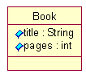The model shows a single class called Book with two attributes: title of type String and pages of type int.
Our model definition, trivial as it is, can be provided to the EMF code generator in a number of ways.
If you have a modeling tool that works with EMF[2] , you can simply draw the class diagram as shown above.
Alternatively, we could describe the model directly in an XMI document that would look something like this:
<ecore:EPackage xmi:version="2.0" xmlns:xmi="http://www.omg.org/XMI"
xmlns:xsi="http://www.w3.org/2001/XMLSchema-instance"
xmlns:ecore="http://www.eclipse.org/emf/2002/Ecore"
name="library "nsURI="http:///library.ecore" nsPrefix="library">
<eClassifiers xsi:type="ecore:EClass" name="Book">
<eStructuralFeatures xsi:type="ecore:EAttribute" name="title"
eType="ecore:EDataType http://www.eclipse.org/emf/2002/Ecore#//EString"/>
<eStructuralFeatures xsi:type="ecore:EAttribute" name="pages"
eType="ecore:EDataType http://www.eclipse.org/emf/2002/Ecore#//EInt"/>
</eClassifiers>
</ecore:EPackage>
The XMI document contains all the same information as the class diagram, but a little less compactly. Every class and attribute in a diagram has a corresponding class or attribute definition in the XMI document.
For those of you that have neither a graphical modeling tool nor an interest in trying to enter all the XMI syntax by hand, a third option is available for describing your model. Since the EMF generator is a code-merging generator, by providing partial Java interfaces (annotated with model information) ahead of time, the generator can use the interfaces as its generation metadata and merge the generated code with the rest of the implementation.
We could have defined our Book model class in Java like this:
/**
* @model
*/
public interface Book
{
/**
* @model
*/
String getTitle();
/**
* @model
*/
int getPages();
}
With this approach, we provide all the model information in the form of Java interfaces with standard get methods[3] to identify the attributes and references. The @model tag is used to identify to the code generator which interfaces, and parts of those interfaces, correspond to model elements and therefore require code generation.
For our simple example, all of our model information is actually available though Java introspection of this interface, so no additional model information is needed. In the general case, however, the @model tag may be followed by additional details about the model element. If for example, we wanted the pages attribute to be read-only (that is, no generation of a set method), we would need to add the following to the annotation:
/** * @model changeable="false" */ int getPages();
Because only information that is different from the default needs to be specified, annotations can be kept simple and concise.
Sometimes, you might want to describe a model with a schema that specifies how instance serializations should look. This can be useful for writing an application that must use XML to integrate with an existing application or to comply with a standard. Here is how we would specify a schema that's equivalent to our simple book model:
<xsd:schema targetNamespace="http:///library.ecore"
xmlns="http:///library.ecore" xmlns:xsd="http://www.w3.org/2001/XMLSchema">
<xsd:complexType name="Book">
<xsd:sequence>
<xsd:element name="title" type="xsd:string"/>
<xsd:element name="pages" type="xsd:integer"/>
</xsd:sequence>
</xsd:complexType>
</xsd:schema>
This approach differs somewhat from the other three, mainly because EMF must apply certain restrictions to the serialization that it eventually uses, to ensure compliance with the schema. As a result, the model that is a created for a schema looks slightly different from one specified in one of the other ways. The details of these differences are beyond the scope of this overview.
In the remainder of this paper, we'll use UML diagrams for their clarity and conciseness. All of the modeling concepts we'll illustrate could also be expressed using annotated Java or directly with XMI, and most have XML Schema equivalents. Regardless of how the information is provided, the code generated by EMF will be the same.
For each class in the model, a Java interface and corresponding implementation class will be generated. In our example, the generated interface for Book looks like this:
public interface Book extends EObject
{
String getTitle();
void setTitle(String value);
int getPages();
void setPages(int value);
}
Each generated interface contains getter and setter methods for each attribute and reference of the corresponding model class.
Interface Book extends the base interface EObject. EObject is the EMF equivalent of java.lang.Object, that is, it is the base of every EMF class. EObject and its corresponding implementation class EObjectImpl (which we will look at later) provide a relatively lightweight base class that lets Book participate in the EMF notification and persistence frameworks. Before we start looking at what exactly EObject brings into the mix, let's continue looking at how EMF generates Book.
Each generated implementation class includes implementations of the getters and setters defined in the corresponding interface, plus some other methods required by the EMF framework.
Class BookImpl will include, among other things, implementations of the title and pages accessors. The pages attribute, for example, has the following generated implementation:
public class BookImpl extends EObjectImpl implements Book
{
...
protected static final int PAGES_EDEFAULT = 0;
protected int pages = PAGES_EDEFAULT;
public int getPages()
{
return pages;
}
public void setPages(int newPages)
{
int oldPages = pages;
pages = newPages;
if (eNotificationRequired())
eNotify(new ENotificationImpl(this, Notification.SET, ..., oldPages, pages));
}
...
}
The generated get method is optimally efficient. It simply returns an instance variable representing the attribute.
The set method, although a little more complicated, is also quite efficient. In addition to setting the instance variable pages, the set method needs to send change notification to any observers that may be listening to the object by calling the eNotify() method. To optimize the case where there are no observers (for example, in a batch application), construction of the notification object (ENotificationImpl) and the call to eNotify() are guarded by a call to eNotificationRequired(). The default implementation of eNotificationRequired() simply checks if there are any observers (adapters) attached to the object. Therefore, when EMF objects are used without observers, the call to eNotificationRequired() amounts to nothing more than an efficient null pointer check, which is inlined when using a JIT compiler.
The generated accessor patterns for other types of attributes, like the String-typed title attribute, have some minor differences but are fundamentally the same as those shown for pages[4] .
The generated accessors for references, especially two-way ones, are a little more complicated and start to show the real value of the EMF generator.
Let's expand our example model with another class Writer that has an association with class Book:
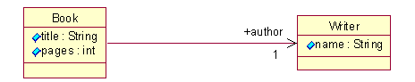The association between a book and its writer is, in this example, a single one-way reference. The reference (role) name used to access the Writer from a Book is author.
Running this model through the EMF generator will, in addition to generating the new interface Writer and implementation class WriterImpl, generate additional get and set methods in interface Book:
Writer getAuthor(); void setAuthor(Writer value);
Since the author reference is one-way, the implementation of the setAuthor() method looks much like a simple data setter, like the earlier one for setPages():
public void setAuthor(Writer newAuthor)
{
Writer oldAuthor = author;
author = newAuthor;
if(eNotificationRequired())
eNotify(new ENotificationImpl(this, ...));
}
The only difference is that here we're setting an object pointer instead of just a simple data field.
Because we're dealing with an object reference, however, the getAuthor() method is a little more complicated. This is because the get method for some types of references, including the type of author, needs to deal with the possibility that the referenced object (in this case Writer) may persist in a different resource (document) from the source object (in this case Book). Because the EMF persistence framework uses a lazy loading scheme, an object pointer (in this case author) may at some point in time be a proxy for the object, instead of the actual referenced object[5] . As a result, the getAuthor() method looks like this:
public Writer getAuthor()
{
if (author != null && author.eIsProxy())
{
Writer oldAuthor = author;
author = (Writer)eResolveProxy((InternalEObject)author);
if (author != oldAuthor)
{
if (eNotificationRequired())
eNotify(new ENotificationImpl(this, Notification.RESOLVE, ...));
}
}
return author;
}
Instead of simply returning the author instance variable, we first call the inherited framework method eIsProxy() method to check if the reference is a proxy, and then call eResolveProxy() if it is. The latter method calls EcoreUtil.resolve(), a static utility method that attempts to load the target object's document, and consequently the object, using the proxy's URI. If successful, it will return the resolved object. If, however, the document fails to load, it will just return the proxy again[6] .
Now that we understand how proxy resolution affects the get pattern for certain types of references, we can look at how the set pattern changes when an association is made two-way. Let's change our one-way author association to this:
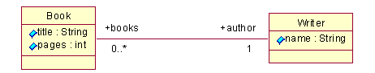The association is now two-way, as indicated by the lack of an arrowhead on the Writer end of the association line. The role name used to access Books from a Writer is books.
If we regenerate our model, the getAuthor() method will be unaffected, but setAuthor() will now look like this:
public void setAuthor(Writer newAuthor)
{
if (newAuthor != author)
{
NotificationChain msgs = null;
if (author != null)
msgs = ((InternalEObject)author).eInverseRemove(this, ..., msgs);
if (newAuthor != null)
msgs = ((InternalEObject)newAuthor).eInverseAdd(this, ..., msgs);
msgs = basicSetAuthor(newAuthor, msgs);
if (msgs != null) msgs.dispatch();
}
else if (eNotificationRequired())
eNotify(new ENotificationImpl(this, ...)); // send "touch" notification
}
As you can see, when setting a two-way reference like author, the other end of the reference needs to be set as well (by calling eInverseAdd()). We also need to remove the inverse of any previous author (by calling eInverseRemove()) because in our model the author reference is singular (that is, a book can only have one author)[7] and therefore this book cannot be in more than one Writer's books reference. Finally, we set the author reference by calling another generated method (basicSetAuthor()) which looks like this:
public NotificationChain basicSetAuthor(Writer newAuthor, NotificationChain msgs)
{
Writer oldAuthor = author;
author = newAuthor;
if (eNotificationRequired())
{
ENotificationImpl notification = new ENotificationImpl(this, ...);
if (msgs == null) msgs = notification; else msgs.add(notification);
}
return msgs;
}
This method looks very similar to the one-way reference set method, except that if the msgs argument is non-null, the notification gets added to it, intsead of being fired directly[8] . Because of all the forward/reverse adding/removing during a two-way reference set operation, as many as four (three in this particular example) different notifications may be generated. A NotificationChain is used to collect all these individual notifications so their firing can be deferred until after all the state changes have been made. The queued-up notifications are sent by calling msgs.dispatch(), as shown in the setAuthor() method, above.
You may have noticed in our example that the books association (from Writer to Book) is multiplicity many (that is, 0..*). In other words, one writer may have written many books. Multiplicity-many references (that is, any reference where the upper bound is greater than 1) in EMF are manipulated using a collection API, so only a get method is generated in the interface:
public interface Writer extends EObject
{
...
EList getBooks();
}
Notice that getBooks() returns an EList as opposed to a java.util.List. Actually, they are almost the same. EList is an EMF subclass of java.util.List that adds two move methods to the API. Other than that, from a client perspective, you can consider it a standard Java List. For example, to add a book to the books association, you can simply call:
aWriter.getBooks().add(aBook);
or to iterate over them you would do something like this:
for (Iterator iter = aWriter.getBooks().iterator(); iter.hasNext(); )
{
Book book = (Book)iter.next();
...
}
As you can see, from a client perspective, the API for manipulating multiplicity-many references is nothing special. However, because the books reference is part of a two-way association (it's the inverse of Book.author), we still need to do all the fancy inverse handshaking that we showed for the setAuthor() method. Looking at the implementation of the getBooks() method in WriterImpl shows us how the multiplicity-many case gets handled:
public EList getBooks()
{
if (books == null)
{
books = new EObjectWithInverseResolvingEList(Book.class, this,
LibraryPackage.WRITER__BOOKS, LibraryPackage.BOOK__AUTHOR);
}
return books;
}
The getBooks() method returns a special implementation class, EObjectWithInverseResolvingEList, which is constructed with all the information it needs to do the reverse handshaking during add and remove calls. EMF actually provides 20 different specialized EList implementations[9] to efficiently implement all types of multiplicity-many features. For one-way associations (that is, those with no inverse) we use EObjectResolvingEList. If the reference doesn't need proxy resolution we'd use EObjectWithInverseEList or EObjectEList, and so on.
So for our example, the list used to implement the books reference is created with the argument LibraryPackage.BOOK__AUTHOR (a generated static int constant representing the reverse feature). This will be used during the add() call to call eInverseAdd() on the Book, similar to the way eInverseAdd() was called on the Writer during setAuthor(). Here's what eInverseAdd() looks like in class BookImpl:
public NotificationChain eInverseAdd(InternalEObject otherEnd, int featureID,
Class baseClass, NotificationChain msgs)
{
if (featureID >= 0)
{
switch (eDerivedStructuralFeatureID(featureID, baseClass))
{
case LibraryPackage.BOOK__AUTHOR:
if (author != null)
msgs = ((InternalEObject)author).eInverseRemove(this, .., msgs);
return basicSetAuthor((Writer)otherEnd, msgs);
default:
...
}
}
...
}
It first calls eInverseRemove() to remove any previous author (as we described previously when we looked at the setAuthor() method), and then it calls basicSetAuthor() to actually set the reference. Although our particular example only has one two-way reference, eInverseAdd() uses a switch statement that includes a case for every two-way reference available on class Book[10] .
Let's add a new class, Library, which will act as the container for Books.
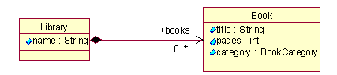The containment reference is indicated by the black diamond on the Library end of the association. In full, the association indicates that a Library aggregates, by value, 0 or more Books. By-value aggregation (containment) associations are particularly important because they identify the parent or owner of a target instance, which implies the physical location of the object when persisted.
Containment affects the generated code in several ways. First of all, because a contained object is guaranteed to be in the same resource as its container, proxy resolution isn't needed. Therefore, the generated get method in LibraryImpl will use a non-resolving EList implementation class:
public EList getBooks()
{
if (books == null)
{
books = new EObjectContainmentEList(Book.class, this, ...);
}
return books;
}
In addition to not performing proxy resolution, an EObjectContainmentEList also implements the contains() operation very efficiently (that is, in a constant time, vs. linear time in the general case). This is particularly important because duplicate entries are not allowed in EMF reference lists, so contains() is called during add() operations as well.
Because an object can only have one container, adding an object to a containment association also means removing the object from any container it's currently in, regardless of the actual association. For example, adding a Book to a Library's books list may involve removing it from some other Library's books list. That's no different than any other two-way association where the inverse has multiplicity 1. Let's assume, however, that the Writer class also had a containment association to Book, called ownedBooks. Then, if a given book instance is in the ownedBooks list of some Writer, when we add it to a Library's books reference, it would need to be removed from the Writer first.
To implement this kind of thing efficiently, the base class EObjectImpl has an instance variable (eContainer) of type EObject that it uses to store the container generically. As a result, containment references are always implicitly two-way. To access the Library from a Book, you can write something like this:
EObject container = book.eContainer();
if (container instanceof Library)
library = (Library)container;
If you want to avoid the downcast, you can change the association to be explicitly two-way instead:
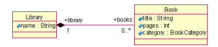and let EMF generate a nice typesafe get method for you:
public Library getLibrary()
{
if (eContainerFeatureID != LibraryPackage.BOOK__LIBRARY) return null;
return (Library)eContainer;
}
Notice that the explicit get method uses the eContainer variable from EObjectImpl instead of a generated instance variable as we saw previously for non-container references (like getAuthor(), above)[11] .
So far, we've looked at how EMF handles simple attributes and various types of references. Another commonly used type of attribute is an enumeration. Enumeration-type attributes are implemented using the Java typesafe enum pattern[12] .
If we add an enumeration attribute, category, to class Book:
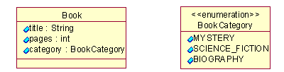and regenerate the implementation classes, interface Book will now include a getter and setter for category:
BookCategory getCategory(); void setCategory(BookCategory value);
In the generated interface, the category methods use a typesafe enumeration class called BookCategory. This class defines static constants for the enumeration's values and other convenience methods, like this:
public final class BookCategory extends AbstractEnumerator
{
public static final int MYSTERY = 0;
public static final int SCIENCE_FICTION = 1;
public static final int BIOGRAPHY = 2;
public static final BookCategory MYSTERY_LITERAL =
new BookCategory(MYSTERY, "Mystery");
public static final BookCategory SCIENCE_FICTION_LITERAL =
new BookCategory(SCIENCE_FICTION, "ScienceFiction");
public static final BookCategory BIOGRAPHY_LITERAL =
new BookCategory(BIOGRAPHY, "Biography");
public static final List VALUES = Collections.unmodifiableList(...));
public static BookCategory get(String name)
{
...
}
public static BookCategory get(int value)
{
...
}
private BookCategory(int value, String name)
{
super(value, name);
}
}
As shown, the enumeration class provides static int constants for the enumerations's values as well as static constants for the enumeration's singleton literal objects themselves. The int constants have the same names as the model's literal names[13] . The literal constants have the same names with _LITERAL appended.
The constants provide convenient access to the literals when, for example, setting the category of a book:
book.setCategory(BookCategory.SCIENCE_FICTION_LITERAL);
The BookCategory constructor is private and therefore the only instances of the enumeration class that will ever exist are the ones used for the statics MYSTERY_LITERAL, SCIENCE_FICTION_LITERAL, and BIOGRAPHY_LITERAL. As a result, equality comparisons (that is .equals() calls) are never needed. Literals can always be reliably compared using the simpler and more efficient == operator, like this:
book.getCategory() == BookCategory.MYSTERY_LITERAL
When comparing against many values, a switch statement using the int values is better yet:
switch (book.getCategory().value()) {
case BookCategory.MYSTERY:
// do something ...
break;
case BookCategory.SCIENCE_FICTION:
...
}
For situations where only the literal name (String) or value (int) is available, convenience get() methods, which can be used to retrieve the corresponding literal object, are also generated in the enumeration class.
In addition to the model interfaces and implementation classes, EMF generates at least two more interfaces (and implementation classes): a factory and a package.
The factory, as its name implies, is used for creating instances of your model classes, while the package provides some static constants (for example, the feature constants used by the generated methods) and convenience methods for accessing your model's metadata[14] .
Here is the factory interface for the book example:
public interface LibraryFactory extends EFactory
{
LibraryFactory eINSTANCE = new LibraryFactoryImpl();
Book createBook();
Writer createWriter();
Library createLibrary();
LibraryPackage getLibraryPackage();
}
As shown, the generated factory provides a factory method (create) for each class defined in the model, an accessor for your model's package, and a static constant reference (that is, eINSTANCE) to the factory singleton.
The LibraryPackage interface provides convenient access to all the metadata of our model:
public interface LibraryPackage extends EPackage
{
...
LibraryPackage eINSTANCE = LibraryPackageImpl.init();
static final int BOOK = 0;
static final int BOOK__TITLE = 0;
static final int BOOK__PAGES = 1;
static final int BOOK__CATEGORY = 2;
static final int BOOK__AUTHOR = 3;
...
static final int WRITER = 1;
static final int WRITER__NAME = 0;
...
EClass getBook();
EAttribute getBook_Title();
EAttribute getBook_Pages();
EAttribute getBook_Category();
EReference getBook_Author();
...
}
As you can see, the metadata is available in two forms: int constants and the Ecore meta objects themselves. The int constants provide the most efficient way to pass around meta information. You may have noticed that the generated methods use these constants in their implementations. Later, when we look at how EMF adapters can be implemented, you'll see that the constants also provide the most efficient way to determine what has changed when handling notifications. Also, just like the factory, the generated package interface provides a static constant reference to its singleton implementation.
Let's say we want to create a subclass, SchoolBook, of our Book model class, like this:
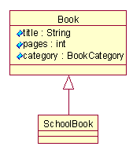The EMF generator handles single inheritance as you'd expect: the generated interface extends the super interface:
public interface SchoolBook extends Book
and the implementation class extends the super implementation class:
public class SchoolBookImpl extends BookImpl implements SchoolBook
As in Java itself, multiple interface inheritance is supported, but each EMF class can only extend one implementation base class. Therefore, when we have a model with multiple inheritance, we need to identify which of the multiple bases should be used as the implementation base class. The others will then be simply treated as mixin interfaces, with their implementations generated into the derived implementation class.
Consider the following example:
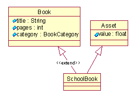Here we've made SchoolBook derive from two classes: Book and Asset. We've identified Book as the implementation base (extended) class as shown[15] . If we regenerate the model, interface SchoolBook will now extend the two interfaces:
public interface SchoolBook extends Book, Asset
The implementation class looks the same as before, only now it includes implementations of the mixed-in methods getValue() and setValue():
public class SchoolBookImpl extends BookImpl implements SchoolBook
{
public float getValue()
{
...
}
public void setValue(float newValue)
{
...
}
...
}
You can add behavior (methods and instance variables) to the generated Java classes without having to worry about losing your changes if you later decide to modify the model and then regenerate. For example, let's add a method, isRecommended(), to class Book. To do this you simply go ahead and add the new method signature to the Java interface Book:
public interface Book ...
{
boolean isRecommended();
...
}
and its implementation in class BookImpl:
public boolean isRecommended()
{
return getAuthor().getName().equals("William Shakespeare");
}
The EMF generator won't wipe out this change because it isn't a generated method to begin with. Every method generated by EMF includes a Javadoc comment that contains an @generated tag, like this:
/**
* ...
* @generated
*/
public String getTitle()
{
return title;
}
Any method in the file that doesn't contain this tag (like isRecommended()) will be left untouched whenever we regenerate. In fact, if we want to change the implementation of a generated method, we can do that by removing the @generated tag from it[16] :
/** * ... *@generated// (removed) */ public String getTitle() { // our custom implementation ... }
Now, because of the missing @generated tag, the getTitle() method is considered to be user code; if we regenerate the model, the generator will detect the collision and simply discard the generated version of the method.
Actually, before discarding a generated method, the generator first checks if there is another generated method in the file with the same name, but with Gen appended. If it finds one, then instead of discarding the newly generated version of the method it redirects the output to it. For example, if we want to extend the generated getTitle() implementation, instead of completely discarding it, then we can do that by simply renaming it like this:
/**
* ...
* @generated
*/
public String getTitleGen()
{
return title;
}
and then adding our override as a user method that does whatever we want:
public String getTitle()
{
String result = getTitleGen();
if (result == null)
result = ...
return result;
}
If we regenerate now, the generator will detect the collision with our user version of getTitle(), but because we also have the @generated getTitleGen() method in the class, it will redirect the newly generated implementation to it, instead of discarding it.
In addition to attributes and references, you can add operations to your model classes. If you do, the EMF generator will generate their signature into the interface and a method skeleton into the implementation class. EMF does not model behavior, so the implementation must be provided by user-written Java code.
This may be done by removing the @generated tag from the generated implementation, as described above, and adding the code right there. Alternatively, the Java code can be included right in the model. In Rose, you can enter it in the text box on the Semantics tab of an Operation Specification dialog. The code will then be stored in the EMF model as an annotation on the operation[17] , and will be generated into its body.
Using the generated classes, a client program can create and initialize a Book with the following simple Java statements:
LibraryFactory factory = LibraryFactory.eINSTANCE;
Book book = factory.createBook();
Writer writer = factory.createWriter();
writer.setName("William Shakespeare");
book.setTitle("King Lear");
book.setAuthor(writer);
Because the Book to Writer association (author) is two-way, the inverse reference (books) is automatically initialized. We can verify this by iterating over the books reference like this:
System.out.println("Shakespeare books:");
for (Iterator iter = writer.getBooks().iterator(); iter.hasNext(); )
{
Book shakespeareBook = (Book)iter.next();
System.out.println(" title: " + shakespeareBook.getTitle());
}
Running this program would produce output something like this:
Shakespeare books:
title: King Lear
To create a document named mylibrary.xmi containing the above model, all we need to do is create an EMF resource at the beginning of the program, put the book and writer into the resource, and call save() at the end:
// Create a resource set.
ResourceSet resourceSet = new ResourceSetImpl();
// Register the default resource factory -- only needed for stand-alone!
resourceSet.getResourceFactoryRegistry().getExtensionToFactoryMap().put(
Resource.Factory.Registry.DEFAULT_EXTENSION, new XMIResourceFactoryImpl());
// Get the URI of the model file.
URI fileURI = URI.createFileURI(new File("mylibrary.xmi").getAbsolutePath());
// Create a resource for this file.
Resource resource = resourceSet.createResource(fileURI);
// Add the book and writer objects to the contents.
resource.getContents().add(book);
resource.getContents().add(writer);
// Save the contents of the resource to the file system.
try
{
resource.save(Collections.EMPTY_MAP);
}
catch (IOException e) {}
Notice that a resource set (interface ResourceSet) is used to create the EMF resource. A resource set is used by the EMF framework to manage resources that may have cross document references. Using a registry (interface Resource.Factory.Registry), it creates the right type of resource for a given URI based on its scheme, file extension, or other possible criteria. Here, we register the XMI resource implementation as the default for this resource set[18] . During load, the resource set also manages the demand-loading of cross document references.
Running this program will produce the file mylibrary.xmi with contents something like this:
<xmi:XMI xmi:version="2.0" xmlns:xmi="http://www.omg.org/XMI"
xmlns:library="http:///library.ecore">
<library:Book title="King Lear" author="/1"/>
<library:Writer name="William Shakespeare" books="/0"/>
</xmi:XMI>
To load the document mylibrary.xmi, as saved above, we set up a resource set, and then simply demand-load the resource into it, as follows:
// Create a resource set.
ResourceSet resourceSet = new ResourceSetImpl();
// Register the default resource factory -- only needed for stand-alone!
resourceSet.getResourceFactoryRegistry().getExtensionToFactoryMap().put(
Resource.Factory.Registry.DEFAULT_EXTENSION, new XMIResourceFactoryImpl());
// Register the package -- only needed for stand-alone!
LibraryPackage libraryPackage = LibraryPackage.eINSTANCE;
// Get the URI of the model file.
URI fileURI = URI.createFileURI(new File("mylibrary.xmi").getAbsolutePath());
// Demand load the resource for this file.
Resource resource = resourceSet.getResource(fileURI, true);
// Print the contents of the resource to System.out.
try
{
resource.save(System.out, Collections.EMPTY_MAP);
}
catch (IOException e) {}
Again, we create a resource set and, for the stand-alone case, register a default resource implementation. Also, we need to ensure that our package is registered in the package registry, which the resource uses to obtain the appropriate metadata and factory for the model it is loading. Simply accessing the eINSTANCE field of a generated package interface is sufficient to ensure that it is registered.
This example uses the second form of save(), which takes an OutputStream, to print the serialization to the console.
Splitting a model into multiple documents, with cross references between them, is simple. If we wanted to serialize the books and writers, in the save example above, into separate documents, all we need to do is create a second resource:
Resource anotherResource = resourceSet.createResource(anotherFileURI);
and add the writer to it, instead of the first:
resource.getContents().add(writer);// (replaced) anotherResource.getContents().add(writer);
This would produce two resources, each containing one object, with a cross document reference to the other.
Note that a containment reference necessarily implies that the contained object is in the same resource as its container. So, for example, suppose that we had created an instance of Library containing our Book via the books containment reference. That would have automatically removed the Book from the contents of the resource, which in this sense, also behaves like a containment reference. If we then added the Library to the resource, the book would implicitly belong to the resource as well, and its details would again be serialized in it.
If you want to serialize your objects in a format other than XMI, that can be arranged as well. You will need to supply your own serialization and parsing code. Create your own resource class (as a subclass of ResourceImpl) that implements your preferred serialization format, and then either register it locally with your resource set, or with the global factory registry if you want it to always be used with your model.
Previously, when we looked at set methods in generated EMF classes, we saw that notifications are always sent when an attribute or reference is changed. For example, the BookImpl.setPages() method included the following line:
eNotify(newENotificationImpl(this, ..., oldPages, pages));
Every EObject can maintain a list of observers (also referred to as adapters), which will be notified whenever a state change occurs. The framework eNotify() method iterates through this list and forwards the notification to the observers.
An observer can be attached to any EObject (for example, book) by adding to the eAdapters list like this:
Adapter bookObserver = ... book.eAdapters().add(bookObserver);
More commonly, however, adapters are added to EObjects using an adapter factory. In addition to their observer role, adapters are more generally used as a way to extend the behavior of the object they're attached to. A client generally attaches such extended behavior by asking an adapter factory to adapt an object with an extension of the required type. Typically it looks something like this:
EObject someObject = ...;
AdapterFactory someAdapterFactory = ...;
Object requiredType = ...;
if(someAdapterFactory.isFactoryForType(requiredType))
{
Adapter theAdapter = someAdapterFactory.adapt(someObject, requiredType);
...
}
Usually, the requiredType represents some interface supported by the adapter. For example, the argument might be the actual java.lang.Class for an interface of the chosen adapter. The returned adapter could then be downcast to the requested interface like this:
MyAdapter theAdapter =
(MyAdapter)someAdapterFactory.adapt(someObject, MyAdapter.class);
Adapters are often used this way to extend the behavior of an object without subclassing.
To handle notifications in an adapter we need to override the eNotifyChanged() method, which is called on every registered adapter by eNotify(). A typical adapter implements eNotifyChanged() to perform some action for some or all of the notifications, based on the notification's type.
Sometimes adapters are designed to adapt a specific class (for example, Book). In this case, the notifyChanged() method might look something like this:
public void notifyChanged(Notification notification)
{
Book book = (Book)notification.getNotifier();
switch (notification.getFeatureID(Book.class))
{
case LibraryPackage.BOOK__TITLE:
// book title changed
doSomething();
break;
caseLibraryPackage.BOOK__CATEGORY:
// book category changed
...
case ...
}
}
The call to notification.getFeatureID() is passed the argument Book.class to handle the possibility that the object being adapted is not an instance of class BookImpl, but is instead an instance of a multiple-inheritance subclass where Book is not the primary (first) interface. In that case, the feature ID passed in the notification will be a number relative to the other class and therefore needs to be adjusted before we can switch using the BOOK__ constants. In single-inheritance situations, this argument is ignored.
Another common type of adapter is not bound to any specific class, but instead uses the reflective EMF API to perform its function. Instead of calling getFeatureID() on the notification, it might call getFeature() instead, which returns the actual Ecore feature (that is, the object in the metamodel that represents the feature).
Every generated model class can also be manipulated using the reflective API defined in interface EObject:
public interface EObject ...
{
..
Object eGet(EStructuralFeature feature);
void eSet(EStructuralFeature feature, Object newValue);
boolean eIsSet(EStructuralFeature feature);
void eUnset(EStructuralFeature feature);
}
Using the reflective API, we could set the name of an author like this:
writer.eSet(LibraryPackage.eINSTANCE.getWriter_Name(), "William Shakespeare");
or get the name like this:
String name = (String)writer.eGet(LibraryPackage.eINSTANCE.getWriter_Name());
Notice that the feature being accessed is identified by metadata obtained from the singleton instance of the library package.
Using the reflective API is slightly less efficient then calling the generated getName() and setName() methods directly[19] , but opens up the model for completely generic access. For example, the reflective methods are used by the EMF.Edit framework to implement a full set of generic commands (for example, AddCommand, RemoveCommand, SetCommand) that can be used with any model. See the EMF.Edit Overview for details.
In addition to eGet() and eSet(), the reflective API includes two other related methods: eIsSet() and eUnset(). The eIsSet() method can be used to find out if an attribute is set or not[20] , while eUnset() can be used to unset (or reset) it. The generic XMI serializer, for example, uses eIsSet() to determine which attributes need to be serialized during a resource save operation.
There are several flags that can be set on a model feature to control the generated code pattern for that feature. Typically, the default settings of these flags will be fine, so you shouldn't need to change them very often.
Unsettable (default is false)
A feature that is declared to be unsettable has a notion of an explicit unset or no-value state. For example, a boolean attribute that is not unsettable can take on one of two values: true or false. If, instead, the attribute is declared to be unsettable, it can then have any of three values: true, false, or unset.
The get method on a feature that is not set will return its default value, but for an unsettable feature, there is a distinction between this state and when the feature has been explicitly set to the default value. Since the unset state is outside of the set of allowed values, we need to generate additional methods to put a feature in the unset state and to determine if it is in that state. For example, if the pages attribute in class Book is declared to be unsettable, then we'll get two more generated methods:
boolean isSetPages(); void unsetPages();
in addition to the original two:
int getPages(); void setPages(int value);
The isSet method returns true if the feature has been explicitly set. The unset method changes an attribute that has been set back to its unset state.
When unsettable is false, we don't get the generated isSet or unset methods, but we still get implementations of the reflective versions: eIsSet() and eUnset() (which every EObject must implement). For non-unsettable attributes, eIsSet() returns true if the current value is different from the default value, and eUnset() sets the feature to the default value (more like a reset).
ResolveProxies (default is true)
ResolveProxies only applies to non-containment references. ResolveProxies implies that the reference may span documents, and therefore needs to include proxy checking and resolution in the get method, as described earlier in this paper.
You can optimize the generated get pattern for references that you know will never be used in a cross document scenario by setting resolveProxies to false. In that case, the generated get method will be optimally efficient[21] .
Unique (default is true)
Unique only applies to multiplicity-many attributes, indicating that such an attribute may not contain multiple equal objects. References are always treated as unique.
Changeable (default is true)
A feature that is not changeable will not include a generated set method, and the reflective eSet() method will throw an exception if you try to set it. Declaring one end of a bi-directional relationship to be not changeable is a good way to force clients to always set the reference from the other end, but still provide convenient navigation methods from either end. Declaring one-way references or attributes to be not changeable usually implies that the feature will be set or changed by some other (user-written) code.
Volatile (default is false)
A feature that is declared volatile is generated without storage fields and with empty implementation method bodies, which you are required to fill in. Volatile is commonly used for a feature whose value is derived from some other feature, or for a feature that is to be implemented by hand using a different storage and implementation pattern.
Derived (default is false)
The value of a derived feature is computed from other features, so it doesn't represent any additional object state. Framework classes, such as EcoreUtil.Copier, that copy model objects will not attempt to copy such features. The generated code is unaffected by the value of the derived flag, except for the package implementation class, which initializes the metadata for the model. Derived features are typically also marked volatile and transient.
Transient (default is false)
Transient features are used to declare (modeled) data whose lifetime never spans application invocations and therefore doesn't need to be persisted. The (default XMI) serializer will not save features that are declared to be transient. Like derived, transient's only effect on the generated code is the metadata initialization in the package implementation class.
As mentioned previously, all the classes defined in a model (for example, Book, Writer) implicitly derive from the EMF base class EObject. However, all the classes that a model uses are not necessarily EObjects. For example, assume we want to add an attribute of type java.util.Date to our model. Before we can do so, we need to define an EMF DataType to represent the external type. In UML, we use a class with the datatype stereotype for this purpose:
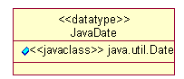As shown, a data type is simply a named element in the model that acts as a proxy for some Java class. The actual Java class is provided as an attribute with the javaclass stereotype, whose name is the fully qualified class being represented. With this data type defined, we can now declare attributes of type java.util.Date like this:
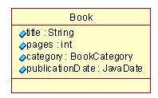If we regenerate, the publicationDate attribute will now appear in the Book interface:
import java.util.Date;
public interface Book extends EObject
{
...
Date getPublicationDate();
void setPublicationDate(Date value);
}
As you can see, this Date-typed attribute is handled pretty much like any other. In fact, all attributes, including ones of type String, int, and so on, have a data type as their type. The only thing special about the standard Java types is that their corresponding data types are predefined in the Ecore model, so they don't need to be redefined in every model that uses them.
A data type definition has one other effect on the generated model. Since data types represent some arbitrary class, a generic serializer and parser (for example, the default XMI serializer) has no way of knowing how to save the state of an attribute of that type. Should it call toString()? That's a reasonable default, but the EMF framework doesn't want to require that, so it generates two more methods in the factory implementation class for every data type defined in the model:
/**
* @generated
*/
public Date createJavaDateFromString(EDataType eDataType, String initialValue)
{
return (Date)super.createFromString(eDataType, initialValue);
}
/**
* @generated
*/
public String convertJavaDateToString(EDataType eDataType, Object instanceValue)
{
return super.convertToString(eDataType, instanceValue);
}
By default, these methods simply invoke the superclass implementations, which provide reasonable, but inefficient, defaults: convertToString() simply calls toString() on the instanceValue, but createFromString() tries, using Java reflection, to call a String constructor or, failing that, a static valueOf() method, if one exists. Typically you should take over these methods (by removing the @generated tags) and change them to appropriate custom implementations:
/** *@generated// (removed) */ public String convertJavaDateToString(EDataType eDataType, Object instanceValue) { return instanceValue.toString(); )
Here is the complete class hierarchy of the Ecore model (shaded boxes are abstract classes):
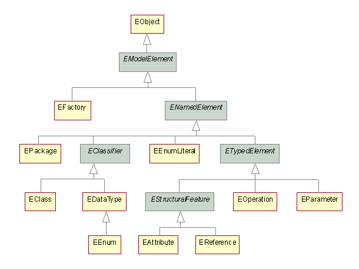This hierarchy includes the classes that represent the EMF model elements described in this paper: classes (and their attributes, references and operations) data types, enumerations, packages and factories.
EMF's implementation of Ecore is itself generated using the EMF generator and as such has the same lightweight and efficient implementation as described in the previous sections of this paper.
[1] Actually, the EMF meta model is itself an EMF model, the default serialized form of which is XMI.
[2] Currently, EMF supports import from Rational Rose, but the generator architecture can easily accommodate other modeling tools as well.
[3] EMF uses a subset of the JavaBean simple property accessor naming patterns.
[4] There are several user-specifiable options that can be used to change the generated patterns. We'll describe some of them later (see Generation control flags, later in this document).
[5] Containment references, which we'll describe later (see Containment references), cannot span documents. There is also a flag that users can set in a reference's meta data to indicate that resolve does not need to be called because the reference will never be used in a cross document scenario (see Generation control flags). In these cases, the generated get method simply returns the pointer.
[6] Applications that need to deal with and handle broken links should call eIsProxy() on the object returned by a get method to see if it is resolved or not (for example, book.getAuthor().eIsProxy()).
[7] This clearly fails to allow for multiple authors, but it keeps the example model simple.
[8] The reason we bother to delegate to a basicSet() method at all is because it's also needed by the eInverseAdd() and eInverseRemove() methods, which we'll look at a little later.
[9] Actually, all of the concrete EList implementations are simple subclasses of one very functional and efficient base implementation class, EcoreEList.
[10] In eInverseAdd(), instead of simply switching on the supplied feature id, it first calls eDerivedStructuralFeatureID(featureID, baseClass). For simple single inheritance models, this method has a default implementation that ignores the second argument and returns the featureID passed in. For models that use multiple inheritance, eDerivedStructuralFeatureID() may have a generated override that adjusts a feature ID relative to a mixin class (that is, baseClass) to a feature ID relative to the concrete derived class of the instance.
[11] EObjectImpl also has an int-typed eContainerFeatureID instance variable to keep track of which reference is currently used for the eContainer.
[12] See http://java.sun.com/developer/JDCTechTips/2001/tt0807.html#tip2.
[13] To conform to proper Java programming style, the static constant names are converted to upper case if the modeled enumeration's literal names are not already upper case.
[14] While your program isn't strictly required to use the Factory or Package interfaces, EMF does encourage clients to use the factory to create instances by generating protected constructors on the model classes, thereby preventing you from simply calling new to create your instances. You can, however, change the access to public in the generated classes manually, if that's what you really want. Your preferences will not be overwritten if you later decide to regenerate the classes.
[15] Actually, the first base class in the Ecore model is the one used as the implementation base class. In the UML diagram, the <<extend>> stereotype is needed to indicate that Book should be first in the Ecore representation.
[16] If you know ahead of time that you're going to want to provide your own custom implementation for some feature, then a better way of doing this is to model the attribute as volatile, which instructs the generator to only generate a skeleton method body in the first place, which you are then expected to implement.
[17] EMF includes a generic mechanism for annotating metamodel objects with additional information. This mechanism can also be used to attach user documentation to elements of the model, and when a model is created from XML Schema, EMF relies on it to capture serialization details that cannot be expressed directly using Ecore.
[18] The second line of the above code is only required when run stand-alone (that is, directly invoked in a JVM, with the required EMF JAR files on the class path). The same registration is automatically made in the global resource factory registry when EMF is run within Eclipse.
[19] Implementations of the reflective methods are also generated for each model class. They switch on the feature type, and simply call the appropriate generated typesafe methods.
[20] See the Unsettable flag under Generation control flags for what constitutes a set attribute.
[21] Think carefully before declaring a feature to not resolve proxies. Just because you don't need to use the reference in a cross document situation doesn't mean that someone else who wants to use your model may not. Declaring a feature to not resolve proxies is kind of like declaring a Java class to be final.